Um roteiro inesquecível entre Lençóis, São Luís e Alcântara
Comece sua JornadaSete dias de experiências autênticas explorando o melhor do Maranhão, desde a capital colonial até as dunas paradisíacas dos Lençóis Maranhenses.
Dia 1
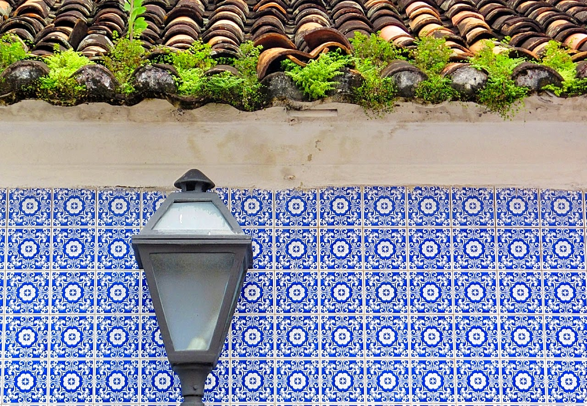
Comece sua jornada explorando o magnífico Centro Histórico de São Luís, reconhecido como Patrimônio Mundial pela UNESCO. A cidade preserva o maior conjunto arquitetônico de azulejos portugueses das Américas, com mais de 3.500 edificações coloniais.
Visite o Centro Histórico pela manhã para evitar o calor intenso. Use calçados confortáveis, pois as ruas são de pedra portuguesa.
Dia 2
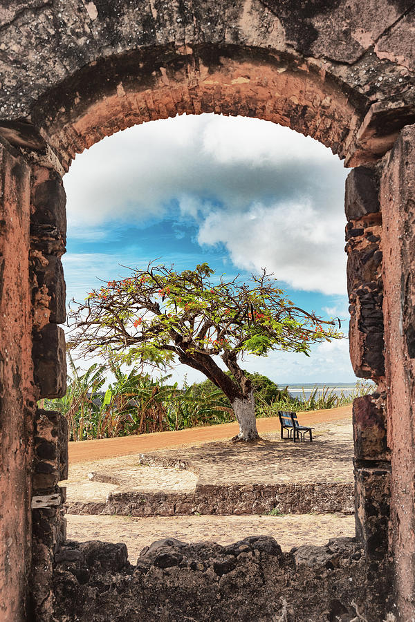
Atravesse a Baía de São Marcos em uma lancha rápida (1h de viagem) e descubra Alcântara, cidade colonial do século XVII que preserva ruínas históricas impressionantes e uma atmosfera única de cidade parada no tempo.
Reserve o passeio com antecedência. Leve protetor solar e chapéu. As ruínas são fotogênicas, especialmente no final da tarde.
Dia 3
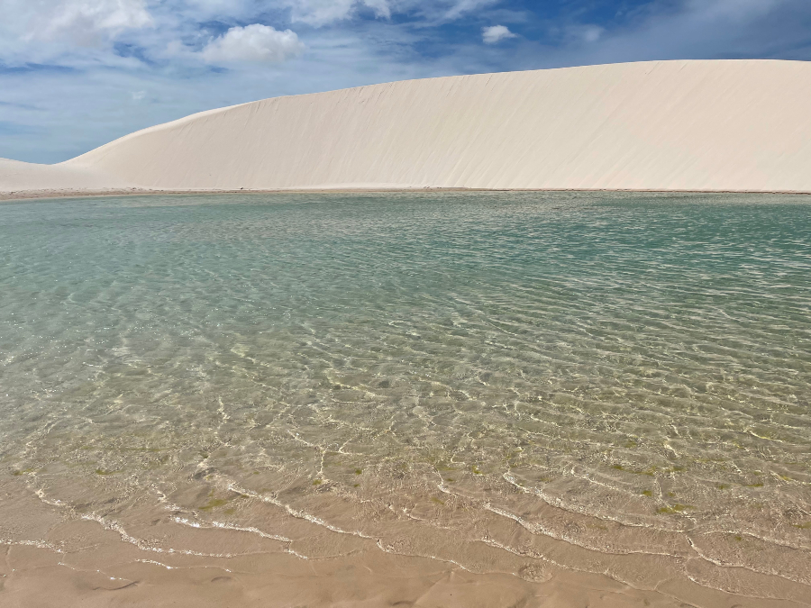
Viaje de São Luís para Barreirinhas (4h de carro ou ônibus), cidade-base para explorar o Parque Nacional dos Lençóis Maranhenses. Aproveite a tarde para conhecer a cidade e se preparar para os dias seguintes.
Contrate os passeios para os próximos dias logo na chegada. A melhor época é entre junho e setembro, quando as lagoas estão cheias.
Dia 4
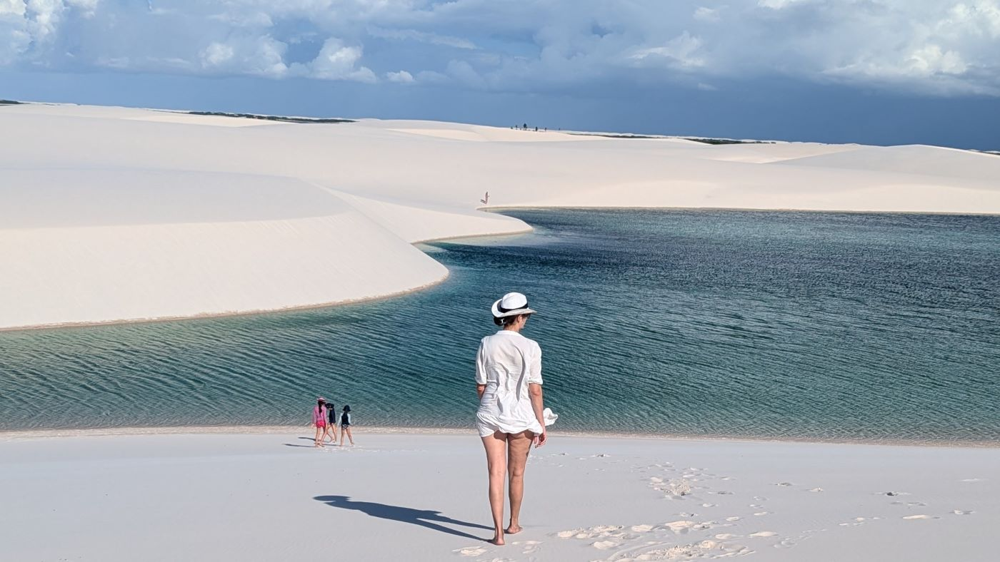
Explore as famosas lagoas dos Lençóis Maranhenses em um passeio de dia inteiro. Caminhe pelas dunas brancas e mergulhe nas lagoas de águas cristalinas em uma das paisagens mais surreais do Brasil.
Dia 5
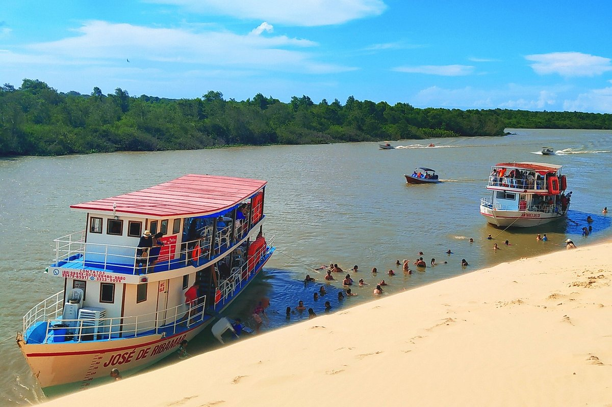
Descubra o Rio Preguiças em um passeio de lancha que combina manguezais, pequenos povoados, praias desertas e a charmosa vila de Atins, onde o rio encontra o mar.
Este é um dos passeios mais completos! Leve dinheiro em espécie para almoço e souvenirs. O camarão em Caburé é imperdível.
Dia 6
Explore o lado menos visitado do parque, acessando as dunas pela comunidade de Santo Amaro. Lagoas mais preservadas e menos turistas garantem uma experiência ainda mais exclusiva.
Dia 7
Retorne a São Luís com tempo para últimas compras de artesanato local, souvenirs e uma última refeição maranhense antes de partir. Leve na bagagem memórias inesquecíveis deste estado único.
Reserve tempo extra para imprevistos na estrada. Leve artesanato local como lembrança: renda renascença, cerâmica e produtos de buriti.
A culinária do Maranhão é uma fusão única de influências indígenas, africanas e portuguesas, resultando em sabores marcantes e pratos únicos no Brasil.
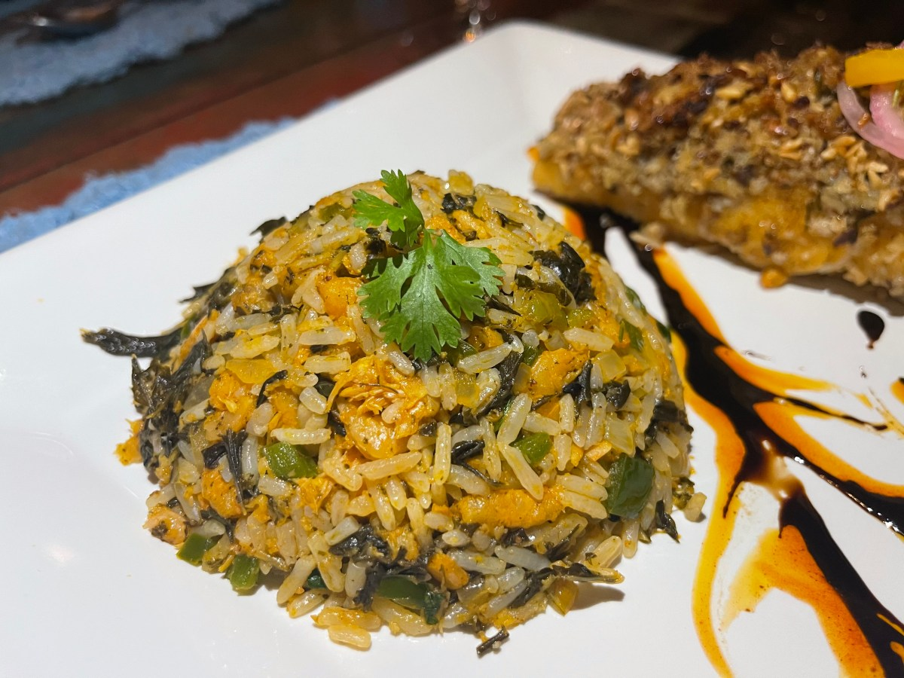
O prato mais emblemático do Maranhão, feito com arroz, vinagreira (planta típica), camarão seco, gergelim e farinha. Tem sabor único e levemente ácido, sendo servido com peixe frito ou camarão.
Patrimônio Cultural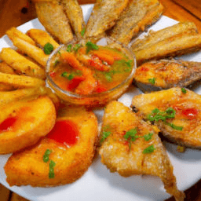
Camarões frescos cozidos em leite de coco com dendê, pimentão e coentro. Servido com arroz branco e farofa, é uma explosão de sabores tropicais que representa a costa maranhense.
Frutos do MarMassa folhada recheada com carne de caranguejo-uçá temperada com limão, coentro e pimenta. É uma iguaria sofisticada encontrada nos melhores restaurantes de São Luís.
Especialidade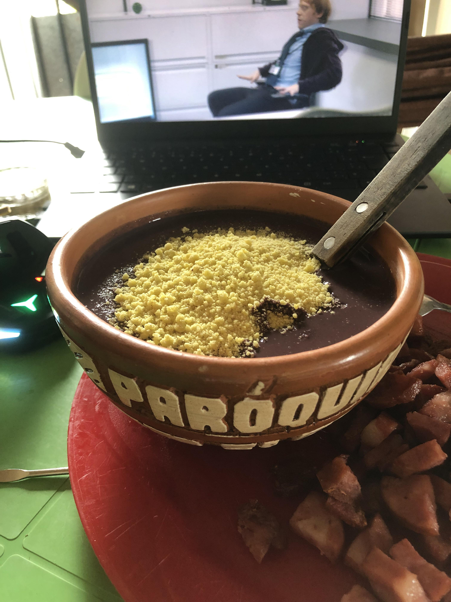
Polpa do açaí maranhense (juçara) servida com farinha de mandioca e tapioca. É o café da manhã tradicional dos ribeirinhos e uma fonte de energia natural.
Tradicional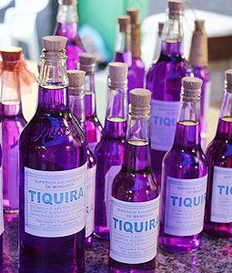
Aguardente artesanal produzida a partir da mandioca, considerada a cachaça do Maranhão. Tem sabor suave e é consumida pura ou em caipirinhas com frutas regionais.
Bebida Típica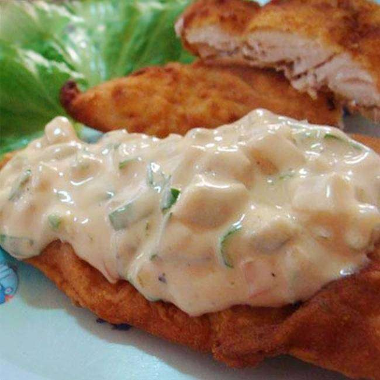
Pescada amarela ou serra frita e coberta com molho de tomate, pimentão e coentro. Acompanha arroz, pirão e farofa. Simples, fresco e delicioso.
ClássicoO Maranhão é um dos estados brasileiros com maior riqueza cultural, preservando tradições centenárias que misturam elementos indígenas, africanos e europeus.
A festa mais importante do Maranhão, reconhecida como Patrimônio Cultural Imaterial da Humanidade pela UNESCO. Celebrada principalmente em junho e julho, o Bumba Meu Boi conta a história da morte e ressurreição de um boi através de música, dança, teatro e rituais.
Existem diferentes sotaques (estilos) de Bumba Meu Boi: Matraca, Zabumba, Orquestra, Costa de Mão e Baixada. Cada um tem características musicais e coreográficas únicas, mas todos celebram a mesma lenda com muita alegria e devoção.
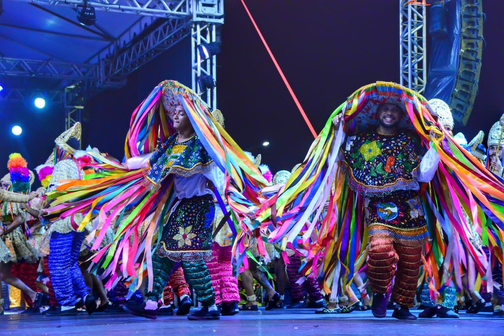
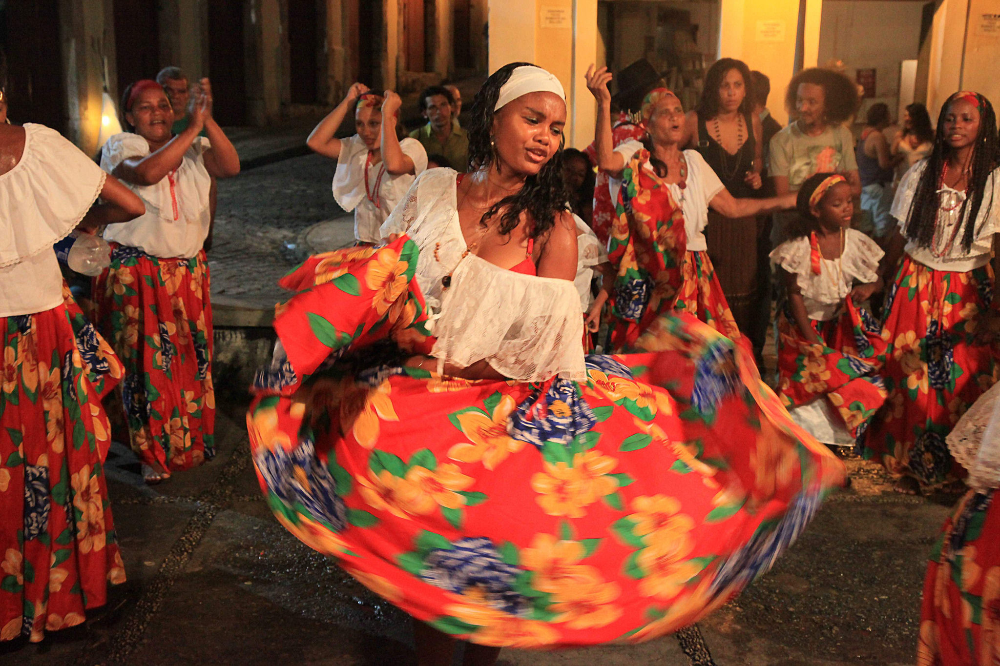
Dança de origem africana praticada principalmente por mulheres, ao som de tambores e cantigas. As dançarinas, vestidas com saias rodadas coloridas, giram e batem umbigadas (punga) umas nas outras em um ritual de celebração e resistência cultural.
O Tambor de Crioula é mais que uma dança: é uma forma de expressão da identidade afro-brasileira, celebrando a ancestralidade e a força feminina. Acontece em terreiros, praças e festas religiosas durante todo o ano.
Celebração religiosa de origem portuguesa realizada 50 dias após a Páscoa. Em Alcântara, a festa ganha contornos especiais com procissões, levantamento de mastros, distribuição de comida aos pobres e apresentações de Bumba Meu Boi e Tambor de Crioula.
A Festa do Divino representa a união entre fé católica e tradições populares, sendo um dos eventos mais importantes do calendário cultural maranhense, especialmente na histórica cidade de Alcântara.
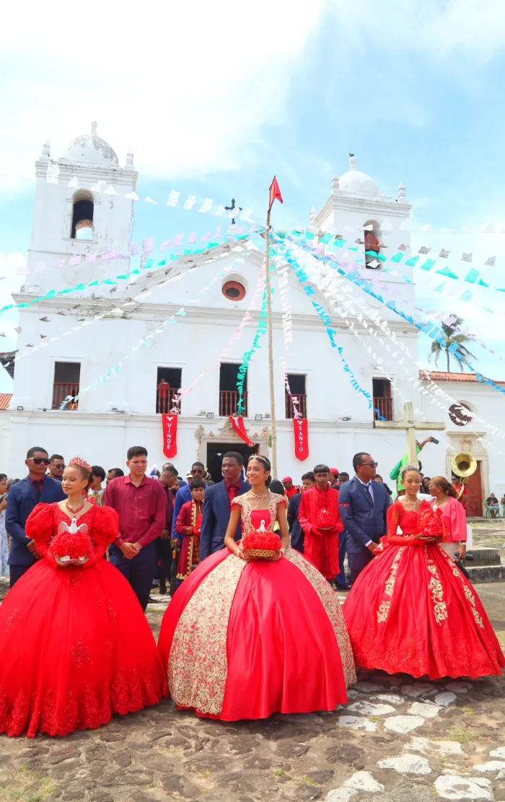
Informações essenciais para planejar sua viagem e aproveitar ao máximo sua experiência no Maranhão.